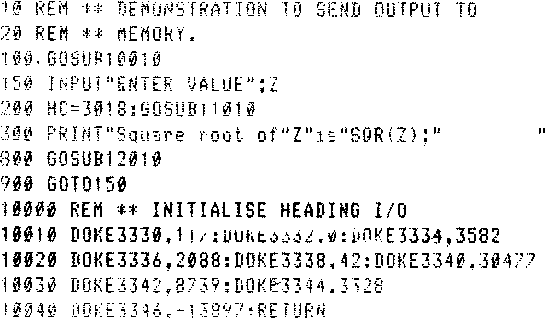

INMC News |
Autumn 1979 · Issue 4 |
| Page 23 of 30 |
|---|
cleverness, and three or four not very serious snags go with it.
The monitor workspace needs more room; it goes from 0C00 to 0C7F which whilst not important on a Nascom 2 or expanded Nascom 1, it represents the loss of #30 precious bytes on a minimum system Nascom 1.
Now because NAS-SYS uses the internal subroutine table itself, and because using the table does some pretty intriguing ‘ooh nasties’ to the stack, it’s most undesirable to have an interrupt occur whilst it’s messing about with the stack, cos if an interrupt does occur, you could spend weeks trying to figure out where the program went on return from the interrupt. So one simple rule here; “if you are using interrupts disable ‘em before going into any NAS-SYS routine”, you can always re-enable on the return.
The CRT routines are slightly slower than Nasbug, but that shouldn’t worry anyone except the $6,000,000 man. Who can read that fast Anyway? RST #28, which works like it does in Nasbug, can’t address the top line (line 16), so titles become a little more difficult. Use an LDIR copy instead.
Finally I would point out that with the delivery of Nascom 2 which has Basic and NAS-SYS, that the program library will become more complicated. Please make sure that any correspondence with the INMC about software states what configuration you are discussing.
Here’s how to output a string to the top of the screen or anywhere else in memory, very efficiently. It is written for the 8k BASIC under NAS-SYS, but the same principle applies to NAS-SYS machine code programms.
I leave it up to you to work out how it works and how to use it. You need to study the NAS-SYS manual.
HINT: Run it, then look at location 0D00 onwards.
LIST
| Page 23 of 30 |
|---|